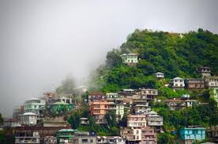
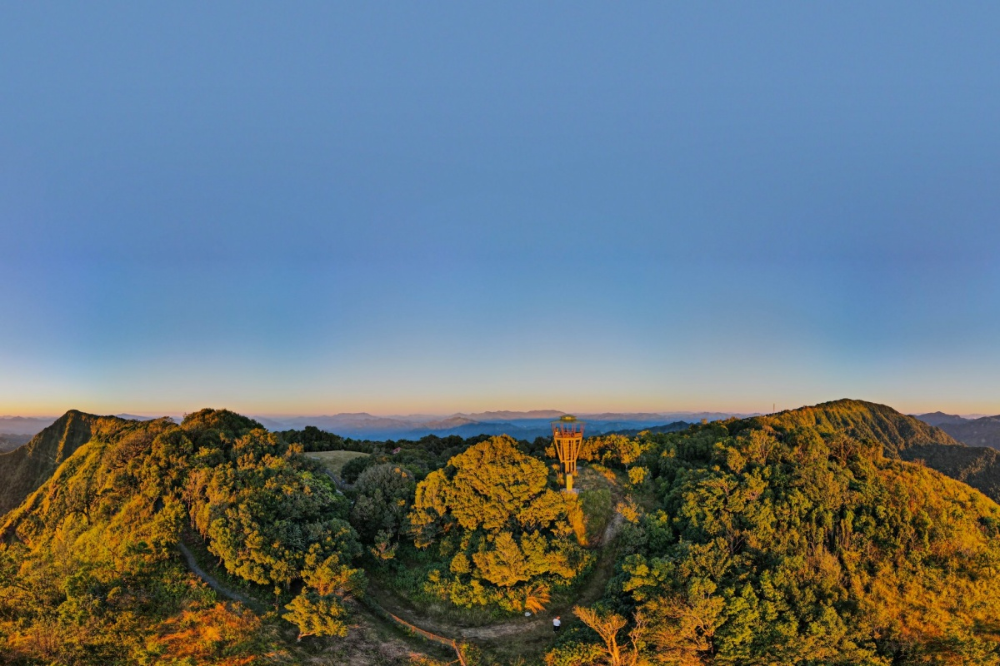

Welcome to Mizoram
Mizoram, the "Land of the Hill People," is a scenic gem in Northeast India. Known for its vibrant tribal culture, rolling hills, and lush forests, Mizoram is a perfect retreat for those seeking serenity, culture, and adventure in equal measure.

Ailawng Village
A hidden gem near Reiek, known for its **rich tribal heritage** and breathtaking landscapes Mizoram .

Reiek
Majestic misty mountains where nature and Mizo culture blend seamlessly.

Vantawng Falls
Mizoram’s highest waterfall, cascading from 750 feet into lush green forests.

Hmuifang
A pristine hill station with untouched forests and vibrant Mizo festivals.

Lunglei
The second-largest town in Mizoram, offering panoramic views and rich history.

Phawngpui Hills
Known as the Blue Mountain, Mizoram’s highest peak and a haven for rare wildlife.